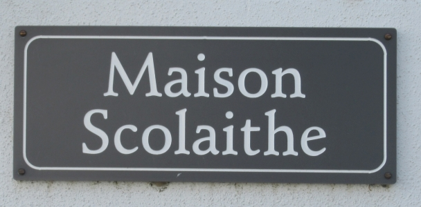
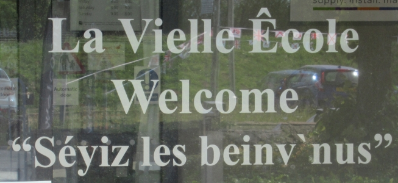

|
Jèrriais |
Angliais |
|
|
|
|
l'êducâtion |
education |
|
l'êtudgiant |
student |
|
l'êcolyi |
pupil |
|
l'êcole |
school |
|
lé bel d'êcole |
schoolyard, playground |
|
l'êcole prînmaithe |
primary school |
|
l'êcole s'gondaithe |
secondary school |
|
la noss'sie |
nursery |
|
lé collège |
college |
|
lé collégien |
college boy |
|
lé maît' d'êcole |
schoolmaster |
|
la maitrêsse d'êcole |
schoolmistress |
|
l'ensîngnant |
teacher |
|
|
|
|
ensîngni |
to teach |
|
êdutchi |
to educate |
|
înstruithe |
to educate |
|
êcoler |
to educate |
|
êtudier |
to study |
|
l'êtude |
study |
|
la léçon |
lesson |
|
la clâsse |
class |
|
l'êcolage |
schooling |
|
apprendre |
to learn, to teach |
|
apprendre par tchoeu |
to learn by heart |
|
êdutchi jusqu'ès dents |
highly educated |
|
la duithie |
training |
|
duithe |
to train |
|
|
|
|
lé diplôme |
diploma |
|
graduer |
to graduate |
|
un gradué |
a graduate |
|
l'unnivèrsité |
university |
|
un problième |
problem |
|
pratitchi |
to practise |
|
la pratique |
practice |
|
èrpéter |
to repeat |
|
la répétition |
repetition |
|
la rêponse |
answer |
|
l'exèrcice |
exercise |
|
lé quiz |
quiz |
|
l'examen |
exam |
|
l'examinneux |
examiner |
|
la testéthie |
testing |
|
l'unniforme |
uniform |
|
l'êcole du Dînmanche |
Sunday school |
|
lé pensionnat |
boarding school |
|
lé d'ver |
homework |
|
caltchuler, cartchuler |
to work out |
|
un caltchuleux, un cartchuleux |
|
|
lé caltchul du sens d'sa tête |
mental arithmetic |
|
|
|
|
les matéthiaux êducâtionnaux |
educational materials |
|
|
|
|
les sujets |
subjects |
|
|
|
|
lé caltchul, lé cartchul |
arithmetic |
|
les mathématiques |
maths |
|
la géographie |
geography |
|
les langues |
languages |
|
lé Jèrriais |
Jèrriais |
|
l'Angliais |
English |
|
lé Français |
French |
|
l'Allémand |
German |
|
lé Portûndgais |
Portuguese |
|
Lé Latîn |
Latin |
|
L'Espangno |
Spanish |
|
l's êtudes èrligieuses |
religious studies |
|
la scienche |
science |
|
la technologie |
technology |
|
la biologie |
biology |
|
la phŷsique |
physics |
|
la chimie |
chemistry |
|
l'histouaithe |
history |
|
l'art |
art |
|
|
|
|
lé papi |
paper |
|
l'êcritouaithe |
desk |
|
la plieunme |
pen |
|
lé crèyon |
pencil |
|
la tabl'ye |
table |
|
la tchaîse |
chair |
|
lé compiuteu |
computer |
|
lé relle |
ruler |
|
l'encre |
ink |
|
l'encriyi |
inkwell |
|
lé pîncieau |
brush |
|
l'êpousseteux |
duster |
|
l'êtchèrre |
set square |
|
les chîsieaux |
scissors |
|
lé compas |
compass, dividers |
|
la craie |
chalk |
|
lé mèrtcheux |
marker |
|
lé livre |
the book |
|
lé livre d'exèrcice |
exercise book |
|
un dictionnaithe |
a dictionary |
|
un appointcheux |
pencil sharpener |
|
eune néthe plianche |
blackboard |
|
eune blianche plianche |
whiteboard |
|
|
|
|
liéthe |
to read |
|
êcrithe |
to write |
|
l'êcrithie |
writing |
|
l'êcrituthe |
handwriting |
|
la bibliothèque |
library |
|
lé vocabulaithe |
vocabulary |
|
la grammaithe / la granmaithe |
grammar |
|
la lectuthe |
reading, lecture |
|
la conféthence |
lecture |
|
la littéthatuthe |
literature |
|
littéthaithe |
literary |
|
un glossaithe |
glossary |
|
un rapport |
report |
|
lé brouoillon |
rough |
|
des notes |
notes |
|
eune page |
page |
|
|
|
|
la pouaîsse |
glue |
|
cliuter |
to stick |
|
eune pouque à plieunmes |
pencil case |
|
un pouaîsson |
a hole-punch |
|
des stêpl'yes |
staples |
|
un stêplieux |
a stapler |
|
stêplier |
to staple |
|
eune blianche plianche întèractive |
interactive white board |
|
eune tabliette |
a tablet |
|
un êcran întèracti |
an interactive screen |
|
mèrtchi eune lîngne |
draw a line |
|
rouogeplieunmer |
to correct, to mark up corrections |
|
la rouogeplieunm'thie |
correction, editing |
|
l'abc |
the alphabet |
|
l'affiche |
the poster |
|
l'almonnas d'cartes |
the atlas |
|
eune plieunme à balle |
a ballpoint pen, a biro |
|
les feûtres |
felttip pens |
|
les crèyons d'chithe |
wax crayons |
|
l'apprendrie |
learning, place of learning |
|
Un garçon bein êdutchi |
a well-educated boy |
|
L'êducâtion oblyigatouaithe |
compulsory education |
|
la testéthie |
testing |
|
lé tchuthitchulum |
curriculum |
|
unnivèrsitaithe |
university |
|
un professeu |
professor |
|
Apprendre ses tabl'yes à l'êcole |
learn one's tables at school |


